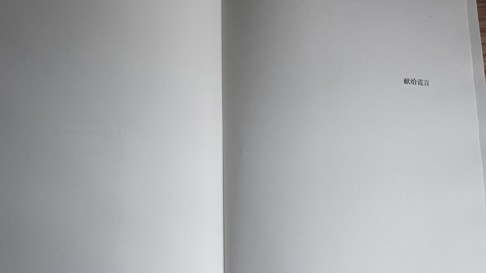

只用于中文版本。
《吃金鱼》
坚持去做一样什么事情非常困难，特别是在当她知道她没有脑子的时候。脑子却是个好东西。
她在地铁门口，任人挤着，想要跃出人群踏上地铁的门，可是失败了，另外一个人将她挤了下去，是一个美丽的女孩子，穿着灰色的衣服，她的衣服上似乎不是花纹，而是血迹。她感到自己十分不幸，但又无可奈何，她只好睁大着眼睛，把所有的愤怒都用在瞳孔上看着那个灰色的女孩，女孩吓了一跳，先是疑惑了一下，想到怎么会有这么没礼貌的人；后来也蹩脚地翻了一个白眼给马鹿。当然不能够示弱，她们死死地盯着对方直到列车开走把她们对视的眼睛强行拉开。两边的玻璃上都起了薄薄的一层雾气。用这样的方式来引起别人的注意可以说是一种挑衅了。
马鹿想过有一天能够见到里厄。
里厄呀，独特的里厄，他名字的拼音是lie，他是谎言。
他带着独特的，不寻常的写作方式出现在人们面前，给人们带来耳目一新的作品，但他从没有在哪个媒体的报道里出现过，他总是像游魂一样无法被人们捕捉住。他新发售的小说《吃金鱼》得到了许多评论家的赞赏和推荐，这本书开始被人们供奉，被人们誉为是年度最佳，被买断了好几次，厂商也在疯狂的印了一版又一版。也越来越多的人为了潮流去阅读这本书，就算没有时间读也会将这本书买下，他们想要能够在别人面前说出这本书的一二，但都是被虚荣心和好胜心驱使的。也越来越多的记者和媒体想要通过各种手段去得到他的照片，为自己的平台带来流量带来读者。
马鹿也是他的读者之一，她花了很长的时间去阅读每一个文字，但是还是没有搞懂这本书在说什么。
后来到了潮湿的季节，房子里的任何事物都是湿润的。人们在这个季节会有特殊的嗜好：各种成瘾，性，兴奋剂，愉悦，赌博，暴食，熬夜... 多巴胺的奖赏回路在不断地让人们嗜取着某种东西但却为此感到焦虑。然而她早晨醒来想到的第一件事情就是时间，如果看到的时间还很早会心安。
醒来后脑子就开始工作，神经元开始传递信息。开始回忆昨天想着今天该做的事情。然后她开始喝茶，有时候会喝咖啡，很浓很浓的茶或者咖啡，浓到变成黑红色。她对咖啡因敏感，所以很快就起作用，然后精神起来。
她将手放在键盘上，开始幻想：自己见到了里厄，于是他们打招呼，但是简单的问候了几句就再也说不上话了。因为人终究不是能和所有人聊得来的。
难得的是，就算这样她也终于开始打字了。在此之前已经足足有三个月没有用过电脑了。从船上下来到现在。她不知道要用“我”还是“她”开头，她记不起来了。不过后来她写下几个字：“寻找里厄”。潮湿的天气经常下雨，这也使她的手掌湿润。她尝试思考：里厄会在哪里？也许是藏在很深很深的森林里，或者是在海底里面的一个水晶房子，或者住在很高的高级公寓，或者只是和我一样住在普通的出租房里？不论如何，没有任何线索是找不到他的。马鹿停止了思考，思考令人费神。
她已经有好长一段时间没有看书了，她开始觉得自己慢慢地在变蠢。
不过她一直在计划如何逃离这个家，快乐地死去。上几个世纪的机器人很容易能自杀，他们知道自己的芯片在哪里，当爸妈不在家的时候，就能用螺丝刀扭开，也许在大脑上，也许在胸口，也许在后颈，找到那个芯片，然后捏碎。由于太多机器人就这么自杀了，一些机器人公司不得不发明更可控的，难以自我毁灭的程序，所以现在的机器人都很容易快乐起来。但马鹿没有，她决定要死了可是她想不起来自己的芯片在哪里。她用了很长时间去想，洗澡的时候，画画的时候，写作的时候，她甚至忘记了说明书放在哪里了。不过她的朋友们都相信是她的爸妈在她还是婴儿的时候勾选了什么设置，才导致她想不起来的。后来她意识到，自己才是那个有遗忘病的人。
不论如何，毁坏芯片不是唯一的办法。朋友们告诉她，杀了父母也是一种办法，因为一个机器人的监护人死了，公司就会把这个机器人收回然后翻新，重新编程，这样就成了另一个机器人，之前的记忆都会被抹去。相当于，死了。
也许里厄不希望我找到他？
也许是吧。马鹿到现在为止遇到了很多人，不论是他们还是她们，但都相继开始讨厌她。很多时候这样的社会关系也让马鹿感到困扰和羞耻。但是又有一种力量驱使和逼迫着她与人们相处，不过这起码能使她不被社会抛弃。努力地想尽办法被社会发现是一件很困难的事情，尤其是在现在所有人的关注点都在里厄身上。她重新打开里厄的书，整本故事讲的是一个人在家里有一个鱼缸，在这个鱼缸里养了一条金鱼，非常非常普通的大眼金鱼。这个人还在患有轻微精神疾病的状态下仍然坚信自己是健康的（实际上是他自己不想面对不完美），不愿意花钱去医院看心理医生，他其实去过一次，但是医生的态度很恶劣（是他自己这么觉得），就再也没有去过了。在这件事情的驱使下，他终于开始出现了幻觉：鱼缸里的大眼金鱼开始慢慢地长大。一开始这个人意识到这是不可能的事，他开始强迫自己不去这么想，但是没有办法，过了几个星期这个金鱼越来越大，已经大到在这个鱼缸里没有多余的位置让它活动了。他晚上开始做梦，梦见这只庞然大物不停地在生长，甚至还和他对话：只要有一天它没有吃饱，就会把这个人吃掉。他一开始没太在意，后来连续几天都梦到同样的梦，就像哈利波特经常梦到伏地魔一样，醒来的时候一身盗汗。说起来挺令人后怕的。之后他一天三次喂食，一次也不敢懈怠。这个金鱼越吃长的越大，它在浴缸里已经挤到变形了，他只好将它放到鱼缸里养着。
这个人没有工作，生活靠社会福利，所以他并不富有。
金鱼越吃越多，它的食量越来越大。他没有办法，他害怕有一天金鱼会吃掉他，他饿着自己也会给金鱼买吃的。他沉思着。他在努力的想办法，他到处借钱给金鱼买饲料，但是没有人愿意借给他，也没有人愿意帮助他，他很无助。深夜里他无法入眠，他开始辗转，于是他拿起了刀叉慢慢地犹豫着地，走进了浴室。他想：只要他把金鱼吃了，金鱼就吃不了他了。他像是决定好了一样昂首挺胸的走到鱼缸前，拿着刀划开了它的肚子，撕扯着它的内脏。浴室里终于变成了血红色，他将鱼骨全都剔了出来，它身上的鱼鳞就电影里的龙鳞一般，手掌心一样大，飞散在浴室的墙上和地上。到了这个时候还是能够看见它的嘴巴在一张一合，像是不甘心地在努力呼吸。这个人开始用刀切鱼肉，一片一片，他在浴室里吃了三天三夜。他已经感觉不到味道了。他干枯的身体正在用尽所有的力气去消化这些鱼肉。他到了街上，没有地方让他落脚。处处都是别人异样的眼神。他开始怀疑，开始不自信。一种黑色的力量正在吞噬他，一个像金色钱币一样的洞正在向他靠近，他开始奔跑，想要逃到没有人的地方；可是没有用，身边总是有人会靠近他，他对着别人大声嘶吼想和别人保持距离。他跑到地铁站里，跨过闸门，里面一如既往的人多，他们簇拥着。刚好一辆列车到站了，他纵身越过所有的人，挤上了那辆车。但他看到车门外的一个女孩却用她硕大的眼睛瞪着他。
在这个世界上，是他留下的肮脏的，带有腥臭的，血液凝结着的，如同遗迹般优雅的浴室。
甘露
2020.05.29